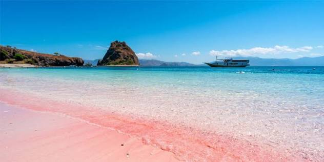
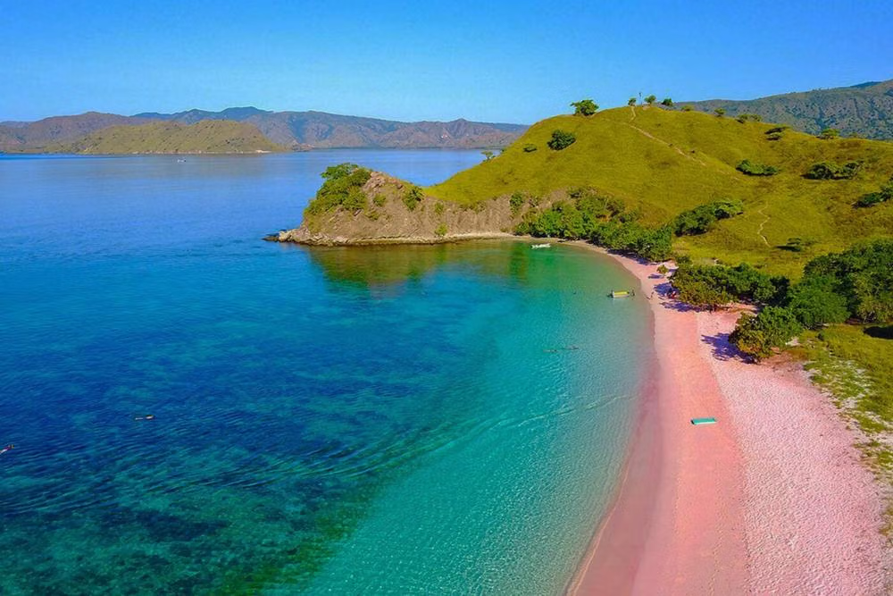
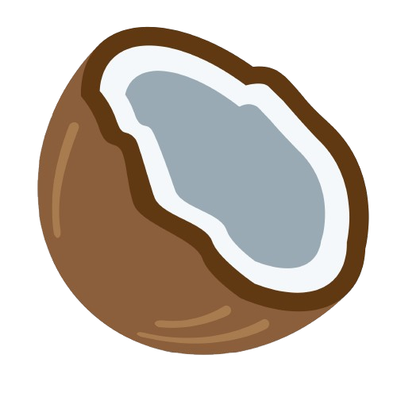



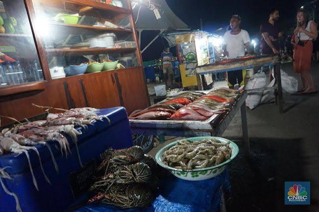
Kampung Ujung Night Market

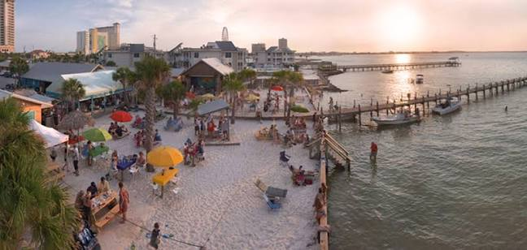
Paradise Bar

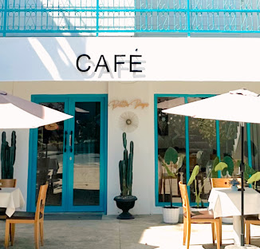
Better days

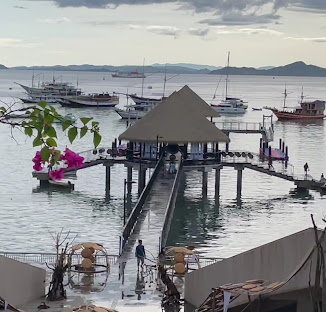
Green Cherry

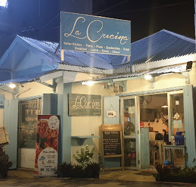
La Cucina
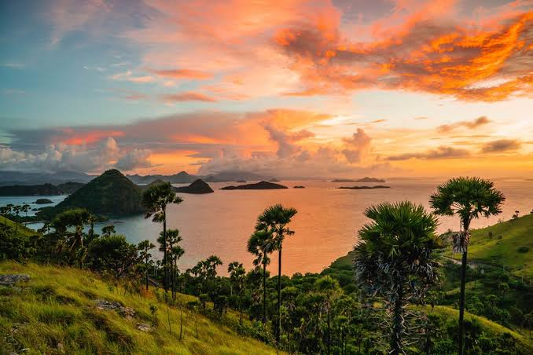
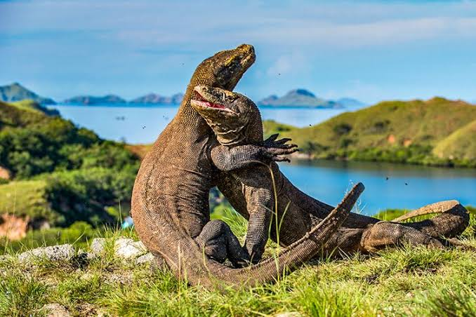
Labuan Bajo merupakan salah satu destinasi wisata terkenal di Indonesia yang terletak di bagian barat Pulau Flores, Nusa Tenggara Timur. Labuan Bajo dikenal sebagai pintu masuk menuju berbagai tempat wisata alam yang indah, terutama Taman Nasional Komodo. Daerah ini memiliki pemandangan laut yang menarik, pulau-pulau kecil, serta suasana tropis yang khas. Pengunjung dapat menikmati keindahan alam dengan melakukan berbagai kegiatan seperti snorkeling, menyelam, berkeliling menggunakan kapal, atau menikmati pemandangan matahari terbenam. Salah satu daya tarik utama Labuan Bajo adalah Taman Nasional Komodo yang menjadi tempat hidup komodo dan berbagai jenis hewan serta tumbuhan lainnya. Selain itu, terdapat banyak pulau dengan pemandangan yang berbeda-beda dan cocok untuk dikunjungi. Keindahan alam dan suasana yang tenang membuat Labuan Bajo menjadi tempat yang menarik bagi wisatawan. Tidak hanya memiliki keindahan alam, Labuan Bajo juga memiliki budaya lokal yang dapat dilihat melalui makanan, kerajinan, dan kehidupan masyarakat setempat. Dengan berbagai keunikan tersebut, Labuan Bajo menjadi salah satu tujuan wisata yang banyak diminati oleh wisatawan dari dalam maupun luar Indonesia. Keindahan alam yang beragam membuat Labuan Bajo menjadi tempat yang cocok untuk menikmati liburan sekaligus mengenal kekayaan alam Indonesia.
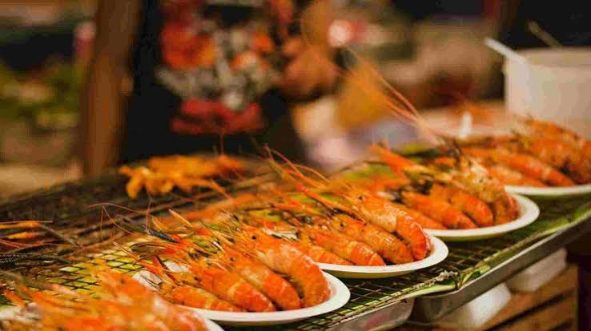
Di Labuan Bajo, terdapat banyak kegiatan menarik yang dapat dilakukan oleh wisatawan. Salah satu kegiatan yang populer adalah island hopping, yaitu mengunjungi beberapa pulau dalam satu perjalanan menggunakan kapal. Wisatawan juga dapat mengunjungi Pulau Padar untuk melihat pemandangan dari atas bukit yang memperlihatkan laut dan pulau-pulau di sekitarnya. Selain itu, wisatawan dapat mengunjungi Pulau Komodo atau Pulau Rinca untuk melihat komodo dari jarak yang aman dengan mengikuti aturan yang telah ditentukan. Bagi wisatawan yang ingin menikmati makanan, Labuan Bajo memiliki berbagai restoran dan tempat makan yang menyediakan makanan lokal maupun makanan lainnya. Pasar malam juga dapat menjadi pilihan untuk mencoba makanan dan melihat kehidupan masyarakat setempat. Labuan Bajo juga cocok untuk fotografi karena memiliki banyak pemandangan alam yang indah, mulai dari laut, pulau, bukit, hingga matahari terbenam. Saat berwisata, pengunjung juga perlu menjaga kebersihan dan kelestarian lingkungan agar keindahan alam Labuan Bajo tetap terjaga. Dengan banyaknya pilihan kegiatan tersebut, wisatawan dapat menikmati Labuan Bajo dengan cara yang beragam. Setiap kegiatan memberikan pengalaman yang berbeda sehingga wisatawan dapat memilih aktivitas sesuai dengan minat mereka.
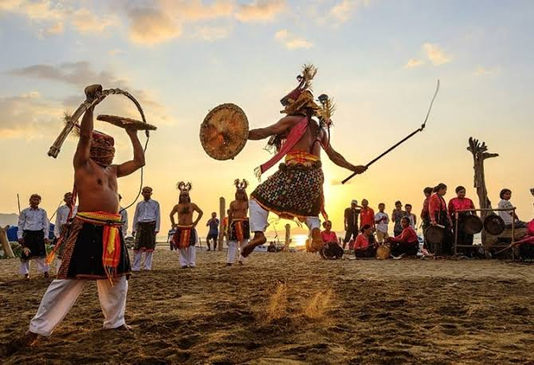
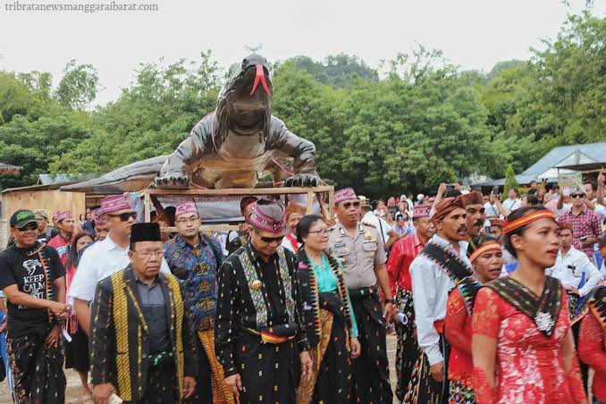
Selain wisata alam dan berbagai kegiatan yang dapat dilakukan, Labuan Bajo juga memiliki kehidupan masyarakat dan budaya lokal yang menarik untuk dipelajari. Masyarakat setempat memiliki berbagai tradisi yang masih dijaga dan menjadi bagian dari kehidupan sehari-hari. Wisatawan dapat mengenal budaya tersebut melalui makanan tradisional, kerajinan tangan, serta kegiatan masyarakat. Kehadiran wisatawan juga memberikan kesempatan bagi masyarakat lokal untuk mengembangkan usaha dan memperkenalkan hasil daerah mereka. Selain itu, wisatawan dapat membeli berbagai kerajinan atau makanan khas sebagai bentuk dukungan terhadap usaha masyarakat setempat. Interaksi dengan masyarakat lokal juga dapat membuat wisatawan lebih memahami kehidupan dan kebiasaan yang ada di Labuan Bajo. Oleh karena itu, berwisata di Labuan Bajo tidak hanya memberikan pengalaman menikmati keindahan alam, tetapi juga kesempatan untuk mengenal kehidupan dan budaya masyarakat setempat. Dengan menghargai budaya dan kebiasaan masyarakat lokal, wisatawan dapat membantu menjaga keunikan Labuan Bajo agar tetap dikenal oleh generasi berikutnya.
Padar Island
Rinca Island
Komodo Island
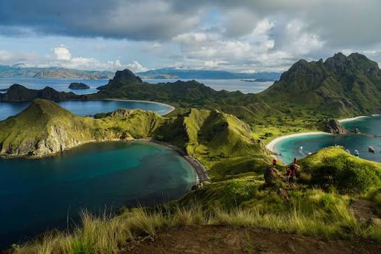
Padar Island is famous for its beautiful hills, unique landscapes, and amazing views of the sea.
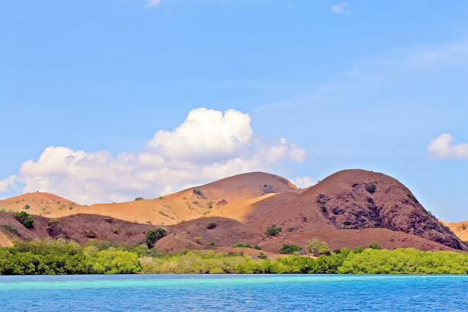
Rinca Island is known for its natural landscapes and is one of the places where visitors can see Komodo dragons.
Komodo Island is one of the main destinations in Komodo National Park and is famous for its Komodo dragons.